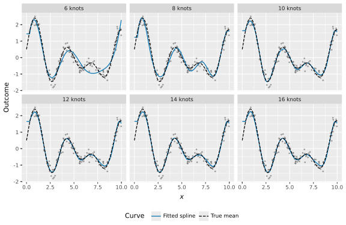
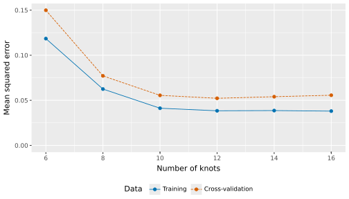

import numpy as np
import pandas as pd
from sklearn.model_selection import train_test_split, KFold, cross_val_score
from sklearn.preprocessing import SplineTransformer
from sklearn.linear_model import LinearRegression
from sklearn.pipeline import make_pipeline
from sklearn.metrics import mean_squared_error10 Machine Learning Overview
10.1 Introduction
Machine learning (ML) develops procedures that learn patterns from data and use those patterns to make decisions or predictions. The procedure is programmed, but its fitted rules depend on the examples supplied. A fitted model need not keep learning after it is deployed; whether it updates over time is a separate design choice (James et al., 2023).
The statistical models in Chapter 9 are also supervised learning methods when used to predict an outcome from features. Statistical learning and machine learning overlap substantially. This chapter introduces learning settings, generalization, and model selection before Chapter 11, Chapter 12, and Chapter 13 develop particular methods.
Three common learning settings are supervised learning, unsupervised learning, and reinforcement learning. Each type differs in the data it uses and the learning tasks it performs. Supervised learning aims to predict outcomes based on labeled data, unsupervised learning focuses on discovering hidden patterns within the data, and reinforcement learning centers around learning optimal actions through interaction with an environment.
We use the following notation to describe the information available to a learning procedure:
\(X\): Input features or states. In a dataset, \(X_i\) is the feature vector for observation \(i\), where \(i\) indexes the observations.
\(Y\): Outcomes or rewards. In supervised learning, \(Y_i\) is the observed outcome paired with \(X_i\). In reinforcement learning, \(Y\) represents feedback received as rewards.
\(A\): A chosen action. In reinforcement learning, the available choices depend on the situation, and the learner selects an action with the aim of improving expected cumulative reward.
10.1.1 Supervised Learning
Supervised learning uses feature vectors \(X\) and corresponding observed outcomes \(Y\) to train a prediction rule. Known outcomes provide feedback about prediction error during fitting. The fitting algorithm estimates parameters by reducing a specified training loss, while cross-validation compares the predictive performance of candidate procedures on held-out folds. These are distinct steps of the modeling workflow.
Key tasks in supervised learning include:
- Classification: Assigning data points to predefined categories or classes.
- Regression: Predicting a numeric outcome, such as a price, duration, or count, based on input data.
In supervised learning, the data consists of both feature vectors \(X\) and labels \(Y\), namely, \((X, Y)\).
10.1.2 Unsupervised Learning
Unsupervised learning finds patterns without using a specified outcome to guide fitting. A dataset may still contain known labels that are used later to interpret a plot or grouping. The objective is to explore and identify hidden structures in the feature vectors \(X\). Since there are no specified labels \(Y\) to guide the fit, the algorithm instead uses a criterion such as within-group similarity or reconstruction error. This is particularly useful when subject matter experts are unsure of common properties within a data set.
Common tasks in unsupervised learning include:
Clustering: Grouping similar data points together based on certain features.
Dimension Reduction: Simplifying the input data by reducing the number of features while preserving essential patterns.
The information used in an unsupervised fit consists of feature vectors \(X\).
10.1.3 Reinforcement Learning
Reinforcement learning involves learning how to make a sequence of decisions to maximize expected cumulative reward. In supervised learning, known outcomes give feedback on predictions. In reinforcement learning, an agent instead interacts with an environment by taking actions \(A\) and receiving rewards \(Y\). Its actions influence which states and rewards it encounters later, so it must learn how a present choice affects the consequences of future choices.
The process in reinforcement learning involves:
States: Descriptions \(X\) of the current situation in which an action is chosen.
Actions: Choices made from the options available in the current state, denoted as \(A\).
Rewards: Feedback \(Y\) received after an action, which guides the learning process. A reward may arrive after a delay.
In reinforcement learning, the data consists of feature vectors \(X\), actions \(A\), and rewards \(Y\), namely, \((X, A, Y)\). These observations form a sequence: actions can change the later states and rewards. The worked tic-tac-toe example in Chapter 13 makes the time ordering explicit as \((X_t, A_t, Y_{t+1}, X_{t+1})\), where \(t\) indexes the learner’s decisions.
10.2 Bias-Variance Tradeoff
The bias-variance tradeoff connects model flexibility with performance on training observations and on new observations. A model generalizes when its fitted patterns help predict new cases from the intended setting. The formal squared-error decomposition applies to a stated supervised prediction problem; related ideas about approximation and stability also help interpret unsupervised methods (James et al., 2023).
10.2.1 Bias
Bias refers to the error introduced by approximating a complex real-world problem with a simplified model. A model with high bias is too restrictive to represent the relationship of interest. This can lead to poor performance on both training and new observations. Underfitting occurs when that restriction prevents the model from capturing important structure. The precise definition of bias below compares predictions across possible training samples with the true conditional mean.
Example (Supervised): In supervised learning, using a linear regression model to fit data that has a nonlinear relationship can produce high bias when the curvature is important over the predictor range being studied.
Example (Unsupervised): In clustering (an unsupervised task), setting the number of clusters too low (e.g., forcing data into two clusters when more exist) can oversimplify structure relevant to the analysis. This is an analogy to supervised prediction bias, not the same error decomposition.
10.2.2 Variance
Variance refers to the model’s sensitivity to small changes in the training data. A model with high variance can adapt closely to the training data, potentially capturing noise or fluctuations that are not representative of the general data distribution. High variance can lead to overfitting: features of the training sample are learned so closely that they harm prediction on new observations.
Example (Supervised): A decision tree with many branches can exhibit high variance. It may closely fit the training data but perform poorly on test data because it overfits to specific idiosyncrasies in the training set.
Example (Unsupervised): In clustering, setting the number of clusters too high or fitting overly flexible cluster shapes (e.g., in Gaussian Mixture Models) can lead to overfitting, where the model captures noise and splits data unnecessarily.
10.2.3 The Tradeoff
The bias-variance tradeoff describes two tendencies as flexibility increases:
- Bias can decrease: A more flexible model can represent relationships that a restrictive model misses.
- Variance can increase: The fitted prediction can become more sensitive to the particular training observations, including their noise.
Conversely, a simpler model may:
- Have higher bias: It may miss a relationship important for prediction.
- Have lower variance: It may change less across training samples.
These are tendencies, not guarantees for every learning procedure or sequence of models. A very stable model can still generalize poorly if it is too restrictive.
10.2.4 Bias-Variance in Supervised Learning
In supervised regression, the aim is to balance bias and variance to reduce prediction error. Suppose a new outcome at feature value \(x\) is \(Y=f(x)+\varepsilon\), where \(f(x)\) is the conditional mean, the noise \(\varepsilon\) has conditional mean zero and variance \(\sigma^2\), and the new outcome is independent of the training data \(D\) given \(x\). Let \(\widehat f_D(x)\) be the prediction from a model fitted to \(D\). Its expected squared prediction error can be decomposed as
\[ \begin{aligned} \mathbb{E}_{D,Y\mid x}[(Y-\widehat f_D(x))^2] &= \{\mathbb{E}_D[\widehat f_D(x)]-f(x)\}^2 \\ &\quad + \operatorname{Var}_D[\widehat f_D(x)] + \sigma^2, \end{aligned} \]
where the first term is squared bias, the second is variance across possible training samples, and the last is irreducible outcome variation under the stated assumptions (James et al., 2023). Thus:
- Bias measures the difference between the average fitted prediction and the true conditional mean. A model that is too restrictive can retain this discrepancy even with abundant training data.
- Variance measures how much the fitted prediction changes across training samples. Flexibility can increase that sensitivity.
- Irreducible error is the variation remaining around the conditional mean with these features. Tuning the fitting procedure cannot remove that noise under the model assumptions.
The expectations average over possible samples and new outcomes. A pair of training and validation error curves from one dataset does not separately estimate the three components. The decomposition is specifically for squared-error prediction; it does not directly become an equivalent formula for classification error or clustering quality.
10.2.5 Bias-Variance in Unsupervised Learning
In unsupervised learning, the bias-variance tradeoff is less formally defined but still relevant. For example:
In clustering, too few groups can miss relevant differences, while overly detailed groupings can change substantially when observations are perturbed or resampled. What counts as too few or too many depends on the purpose of the grouping.
In principal component analysis (PCA), retaining too few components loses variation needed to reconstruct the observations. Retaining additional components can also retain noise. The digit-image example in Chapter 12 makes this compression tradeoff visible.
In unsupervised learning, balancing bias and variance typically involves tuning hyperparameters (e.g., number of clusters, number of components) to find the right complexity level.
10.2.6 Striking the Right Balance
To strike the balance between bias and variance in both supervised and unsupervised learning, techniques such as regularization, early stopping, cross-validation, and hyperparameter tuning are useful. Early stopping, for example, halts an iterative fit when its validation performance stops improving. These techniques help compare or control flexibility; none guarantees good prediction under a changed population or an unsuitable validation design.
10.3 Cross-Validation
Cross-validation estimates predictive performance by repeatedly fitting a procedure on one subset and evaluating it on held-out observations. It can compare hyperparameters, such as the number of spline knots, without relying on a single training-validation split. The validation design should reflect the intended prediction setting (scikit-learn Developers, 2026a).
Training, validation, and test records have different roles. Training records fit a candidate model. Validation records compare its settings. A test set is reserved for a final assessment after selection. When cross-validation tunes a model, its folds come from the training portion; the final test set remains outside that process.
10.3.1 K-Fold Cross-Validation
For \(n\) training observations, \(K\)-fold cross-validation uses an integer number of folds \(K\) between two and \(n\):
- Split the training data into \(K\) folds of nearly equal size.
- Fit on \(K-1\) folds and predict the remaining validation fold.
- Repeat so that each fold is held out once.
- Average the validation scores across the \(K\) fits.
For squared-error prediction, let \(I_k\) contain the observation indices in validation fold \(k\), let \(n_k\) be its size, and let \(\widehat f_{-k}\) be fitted without that fold. The fold loss \(L_k\) and mean score are
\[ L_k = \frac{1}{n_k}\sum_{i\in I_k} \{y_i-\widehat f_{-k}(x_i)\}^2, \qquad \operatorname{CV}_K = \frac{1}{K}\sum_{k=1}^K L_k, \]
where \(x_i\) and \(y_i\) are the recorded features and outcome for observation \(i\). Smaller scores are preferred for a loss such as mean squared error (MSE), while other scores, such as accuracy, are maximized. For unequal fold sizes, the mean of fold losses need not equal a loss calculated by pooling all held-out predictions. We report the mean of fold losses in the example.
Averaging reduces dependence on a particular partition, but the scores are not independent replications: their training sets overlap. Model selection can still overfit the validation results if many choices are tried. The reserved test set assesses the selected procedure once.
Leave-one-out cross-validation (LOOCV) takes each observation as one fold. It makes \(n\) fits for \(n\) training observations, each using \(n-1\) records. This can be computationally expensive and is not automatically a more stable assessment than a moderate number of folds.
10.3.2 Benefits of Cross-Validation
- Detecting poor generalization: Low training error coupled with higher validation error can reveal an overly flexible fit.
- Identifying inadequate fit: Poor training and validation performance can motivate a more flexible model or more useful features.
- Comparing candidates: Reusing the same folds gives each candidate the same fitting and validation observations, making scores easier to compare.
Cross-validation does not automatically prevent either underfitting or overfitting. In addition, a random fold split is unsuitable when the prediction task requires future periods or unseen groups to be kept separate. Temporal and grouped validation designs address those settings.
10.3.3 Cross-Validation in Unsupervised Learning
Unsupervised methods need a criterion suited to their purpose; there is no common outcome prediction error for every method. Two useful kinds of assessment are:
- Stability testing: Refit a clustering method after perturbing or resampling observations and compare assignments for shared cases. Allow for arbitrary permutations of cluster IDs. This measures sensitivity to the data rather than prediction of known labels.
- Internal validation: A silhouette score or Davies-Bouldin index describes within-group cohesion and separation between groups. These scores can compare candidate groupings, but do not by themselves measure stability across refits or establish that groups are real scientific categories (Hastie et al., 2009).
A dimension-reduction method can instead be evaluated by how accurately it reconstructs held-out observations. The evaluation criterion and data split must match the intended use. Both supervised and unsupervised procedures need these choices before a tuning result can be interpreted.
Preprocessing must also respect each split. A modeling pipeline fits its preparation steps and estimator together on the fitting records, then applies the learned operations to held-out records. The worked example below uses a pipeline to learn spline features separately within every fold, following the same principle as the encoding and scaling examples in Chapter 9.
10.3.4 Curve Fitting with Splines
Overfitting occurs when a flexible fit captures sample-specific noise that harms prediction on new observations. We compare fitted shapes with a known true relationship, then compare training loss with held-out loss. The simulation uses 200 observations and candidate knot counts from 6 to 16. Its fixed simulation and split seeds make the comparison reproducible.
A cubic spline joins degree-three polynomial pieces at locations called knots. More knots allow more local changes in shape. The polynomial degree stays at three throughout the example; the knot count controls flexibility. We do not need extremely many knots to compare underfitting with the point where further flexibility stops improving validation performance.
10.3.4.1 Simulating the Observations
We use NumPy and pandas for the data and scikit-learn for model fitting and validation. The plotting package is introduced when we draw the figures.
The true conditional mean is the same function used in the earlier example:
\[ f(x)=\sin(1.5x)+0.5\cos(0.5x)+\sin(2x). \]
We name it explicitly so that it can generate the outcomes and supply the reference curve in the plots. It accepts an array and returns an array of the same shape.
def true_function(x):
"""Return the simulated conditional mean at each input value."""
return np.sin(1.5 * x) + 0.5 * np.cos(0.5 * x) + np.sin(2 * x)Each observation has one input sampled uniformly between zero and ten. Independent Gaussian noise has mean zero and standard deviation 0.2, so the conditional noise variance is \(0.2^2=0.04\). Scikit-learn expects a feature matrix, so reshape(-1, 1) gives the input 200 rows and one column; ravel() gives the response a one-dimensional shape.
rng = np.random.default_rng(2025)
X = np.sort(rng.random(200) * 10).reshape(-1, 1)
noise = rng.normal(0, 0.2, X.shape[0])
y = true_function(X).ravel() + noiseWe reserve 30% of the observations for the final test. That leaves 140 training observations and 60 test observations. The random split is appropriate for this simulation’s independently generated observations; a temporal prediction problem would require a different design.
X_train, X_test, y_train, y_test = train_test_split(
X, y, test_size=0.3, random_state=2025
)
{"training_rows": len(y_train), "test_rows": len(y_test)}{'training_rows': 140, 'test_rows': 60}10.3.4.2 Constructing the Pipeline
A spline transformer converts the single input into several basis features, each describing part of its range. Linear regression estimates coefficients for those features. The resulting prediction is nonlinear in the input, even though it is linear in the fitted coefficients.
The helper below constructs that two-step pipeline. The knots are uniformly spaced between the fitting data’s boundaries. The transformer omits one basis column because the full basis already represents a constant, while LinearRegression supplies an intercept. Outside the fitted input range, we explicitly use the transformer’s constant-boundary extrapolation rule (scikit-learn Developers, 2026b).
def make_spline(n_knots):
"""Construct a cubic-spline regression pipeline with n_knots knots."""
spline = SplineTransformer(
degree=3, n_knots=n_knots, knots="uniform",
include_bias=False, extrapolation="constant"
)
return make_pipeline(spline, LinearRegression())We compare six knot counts. Five-fold cross-validation uses only the training portion, with the same folds for every candidate. Each fold therefore fits on 112 records and validates on the other 28.
knots_list = [6, 8, 10, 12, 14, 16]
cv = KFold(n_splits=5, shuffle=True, random_state=2025)Scikit-learn reports negative mean squared error so that its scoring interface consistently prefers larger values. We negate those returned scores to obtain ordinary MSE, for which smaller is better. After obtaining the validation losses, we also fit each candidate on all training records for the training-loss comparison and the shape plots. The test records are not used in these steps.
models = {}
rows = []
for n_knots in knots_list:
model = make_spline(n_knots)
fold_mse = -cross_val_score(
model, X_train, y_train, cv=cv, scoring="neg_mean_squared_error"
)
model.fit(X_train, y_train)
models[n_knots] = model
rows.append({
"knots": n_knots,
"basis_cols": model.named_steps["splinetransformer"].n_features_out_,
"train_mse": mean_squared_error(y_train, model.predict(X_train)),
"cv_mse": fold_mse.mean()
})The labeled table makes the number of features and the two kinds of loss explicit. The original input has one column; the candidate pipelines create 7 through 17 basis columns, plus a regression intercept. Increasing the knot count changes model flexibility without increasing the polynomial degree or the number of observations.
scores = pd.DataFrame(rows)
scores.round(4)| knots | basis_cols | train_mse | cv_mse | |
|---|---|---|---|---|
| 0 | 6 | 7 | 0.1184 | 0.1499 |
| 1 | 8 | 9 | 0.0625 | 0.0771 |
| 2 | 10 | 11 | 0.0412 | 0.0555 |
| 3 | 12 | 13 | 0.0384 | 0.0523 |
| 4 | 14 | 15 | 0.0386 | 0.0540 |
| 5 | 16 | 17 | 0.0380 | 0.0556 |
10.3.4.3 Comparing the Fitted Shapes
We predict on a fine input grid to draw each fitted function. These are plotting locations, not additional training observations. The known true mean is kept alongside the predictions. Converting those two columns to long form lets a plot distinguish the reference curve from the fitted one.
x_grid = np.linspace(0, 10, 1000).reshape(-1, 1)
curve_frames = []
for n_knots, model in models.items():
frame = pd.DataFrame({
"x": x_grid.ravel(), "fitted": model.predict(x_grid),
"truth": true_function(x_grid).ravel()
})
frame["knots"] = f"{n_knots} knots"
curve_frames.append(frame)
curves = pd.concat(curve_frames, ignore_index=True).melt(
id_vars=["x", "knots"], value_vars=["fitted", "truth"],
var_name="curve", value_name="y"
)
curves["knots"] = pd.Categorical(
curves["knots"], categories=[f"{k} knots" for k in knots_list], ordered=True
)
observations = pd.DataFrame({"x": X_train.ravel(), "y": y_train})Each facet shows the same training observations and uses the same axes. Separate panels make local changes visible. A solid blue line identifies the fitted spline, and a dashed black line identifies the true mean, so line style also distinguishes the curves without relying on color alone. The training-point layer lacks a knots column and is repeated in all facets by plotnine.
import plotnine as gg
gg.options.figure_format = "svg"labels = ["Fitted spline", "True mean"]
fit_plot = (
gg.ggplot(curves, gg.aes("x", "y", color="curve", linetype="curve"))
+ gg.geom_point(data=observations, mapping=gg.aes("x", "y"),
inherit_aes=False, color="#666666", alpha=0.5, size=0.6)
+ gg.geom_line(size=0.7)
+ gg.facet_wrap("~ knots", ncol=3)
+ gg.scale_color_manual(values={"fitted": "#0072B2", "truth": "black"},
breaks=["fitted", "truth"], labels=labels)
+ gg.scale_linetype_manual(values={"fitted": "solid", "truth": "dashed"},
breaks=["fitted", "truth"], labels=labels)
+ gg.labs(x="$x$", y="Outcome", color="Curve", linetype="Curve")
+ gg.theme(figure_size=(8, 5.2), legend_position="bottom")
)
fit_plot
The six-knot fit misses some of the curvature. Fits with 10 or more knots follow the true mean more closely. Additional local variation at larger knot counts can fit the noise as well as the signal. All panels share axes that span the observations and fitted values.
10.3.4.4 Comparing Training and Validation Loss
A shape plot alone cannot select the best complexity. We reshape the loss table for a second comparison, retaining the distinction between training loss and mean cross-validation loss.
errors = scores.melt(
id_vars="knots", value_vars=["train_mse", "cv_mse"],
var_name="sample", value_name="mse"
)The training loss falls substantially before leveling off. Validation loss reaches its smallest mean at 12 knots and then rises modestly. The rise is small in this example; it should not be described as a dramatic failure of the larger models. The point is that a better training fit does not ensure better prediction on observations excluded from fitting. The training loss uses each fit on all 140 training records, whereas cross-validation fits use 112 records per fold. The gap therefore also reflects the smaller fitting samples used during validation; it does not isolate variance or measure overfitting by itself.
labels = ["Training", "Cross-validation"]
error_plot = (
gg.ggplot(errors, gg.aes("knots", "mse", color="sample", linetype="sample"))
+ gg.geom_line()
+ gg.geom_point(size=2)
+ gg.scale_x_continuous(breaks=knots_list)
+ gg.expand_limits(y=0)
+ gg.scale_color_manual(values={"train_mse": "#0072B2", "cv_mse": "#D55E00"},
breaks=["train_mse", "cv_mse"], labels=labels)
+ gg.scale_linetype_manual(values={"train_mse": "solid", "cv_mse": "dashed"},
breaks=["train_mse", "cv_mse"], labels=labels)
+ gg.labs(x="Number of knots", y="Mean squared error",
color="Data", linetype="Data")
+ gg.theme(figure_size=(7, 4), legend_position="bottom")
)
error_plot
Training error is not strictly decreasing at every step. Changing the number of uniform knots moves their positions, so the candidates are not exact extensions of one another. Small reversals in training loss are possible. The broader comparison still shows the initial gain in flexibility and the later point where validation improvement stops.
10.3.4.5 Evaluating the Selected Model
We select the smallest observed mean validation loss. The corresponding pipeline has already been fitted on all 140 training observations. Only now do we evaluate that selected pipeline on the 60 reserved test cases. The test loss is not used to revise the knot count.
best_knots = int(scores.loc[scores["cv_mse"].idxmin(), "knots"])
selected_model = models[best_knots]
test_mse = mean_squared_error(y_test, selected_model.predict(X_test))
pd.DataFrame({"knots": [best_knots], "test_mse": [test_mse]}).round(4)| knots | test_mse | |
|---|---|---|
| 0 | 12 | 0.0574 |
The selected model uses 12 knots and has test MSE about 0.057. Its cross-validation MSE is about 0.052. Both are above the conditional noise variance of 0.04, though finite-sample errors need not obey an exact lower bound at that number. Another sample or fold assignment could change the selected complexity and the final error.
The example illustrates underfitting, the gain from additional flexibility, and the risk of fitting sample-specific variation. It does not separately estimate theoretical bias and variance. In practice, cross-validation, regularization, early stopping, or a restriction on complexity can help choose a fit that generalizes. The test set then evaluates the selected procedure under its intended prediction setting.
Exercises
10.1 Classify each problem by its learning setting and identify the information available to the learning procedure.
- Predict whether a 311 request closes within one hour using labeled past requests. Identify the features and outcome.
- Group requests by their recorded features without defining an outcome. State one reason the resulting groups may not represent real-world kinds of requests.
- Choose traffic-signal actions over time and use later traffic flow as feedback. Identify the state, action, and reward.
- For each problem, name one conclusion the fitted method alone cannot establish.
10.2 The table gives hypothetical training and cross-validation log losses for three candidate models. Lower log loss indicates better probabilistic predictions.
| Candidate | Training log loss | Mean cross-validation log loss |
|---|---|---|
| A | 0.68 | 0.69 |
| B | 0.50 | 0.54 |
| C | 0.20 | 0.75 |
- Which candidate appears to underfit? Explain using both scores.
- Which candidate appears to overfit? Explain using the difference between its training and cross-validation scores.
- Which candidate would you select based on these scores? State one reason the selected model’s cross-validation score may not equal its future performance.
10.3 Review a proposed workflow for tuning a classifier. The analyst first standardizes numeric features using all observations, then creates cross-validation folds and compares several values of the regularization parameter.
- Identify the source of information leakage in this workflow.
- Describe how a pipeline would change the order of fitting and applying the standardization step.
- Explain how the analyst should use a separate test set after selecting the regularization parameter.
- State one reason a random cross-validation split may be unsuitable for data collected repeatedly over time.
References
Hastie, T., Tibshirani, R., & Friedman, J. (2009). The elements of statistical learning: Data mining, inference, and prediction. Springer.
James, G., Witten, D., Hastie, T., Tibshirani, R., & Taylor, J. (2023). An introduction to statistical learning: With applications in Python. Springer. https://doi.org/10.1007/978-3-031-38747-0
scikit-learn Developers. (2026a). Cross-validation: Evaluating estimator performance. https://scikit-learn.org/stable/modules/cross_validation.html
scikit-learn Developers. (2026b). SplineTransformer. https://scikit-learn.org/stable/modules/generated/sklearn.preprocessing.SplineTransformer.html